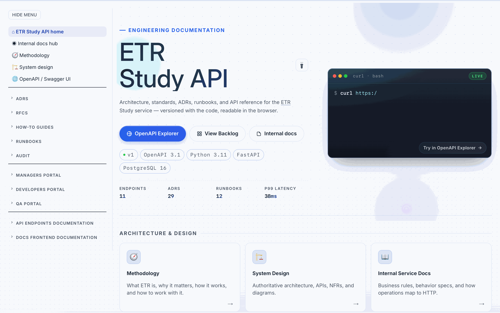
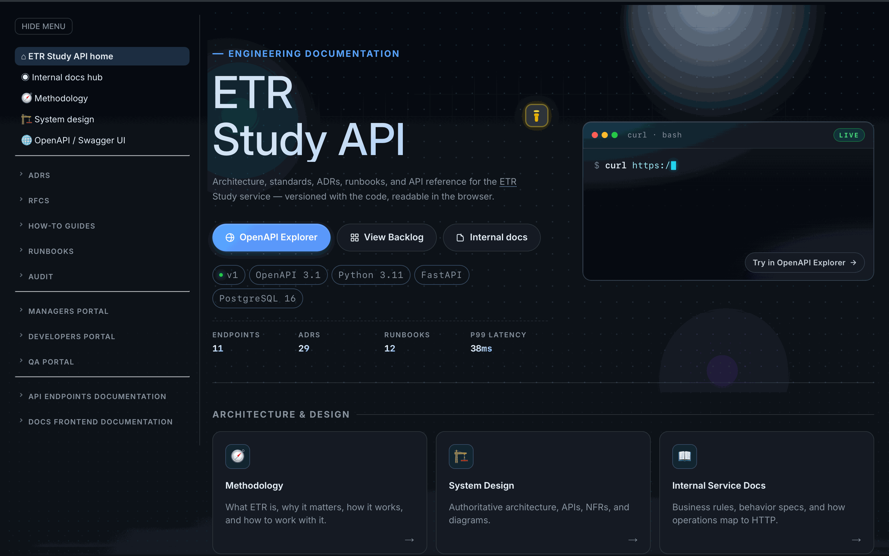
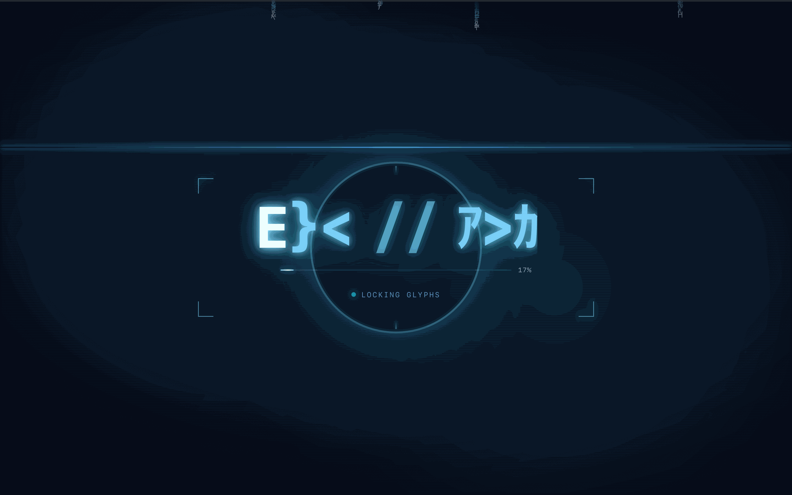
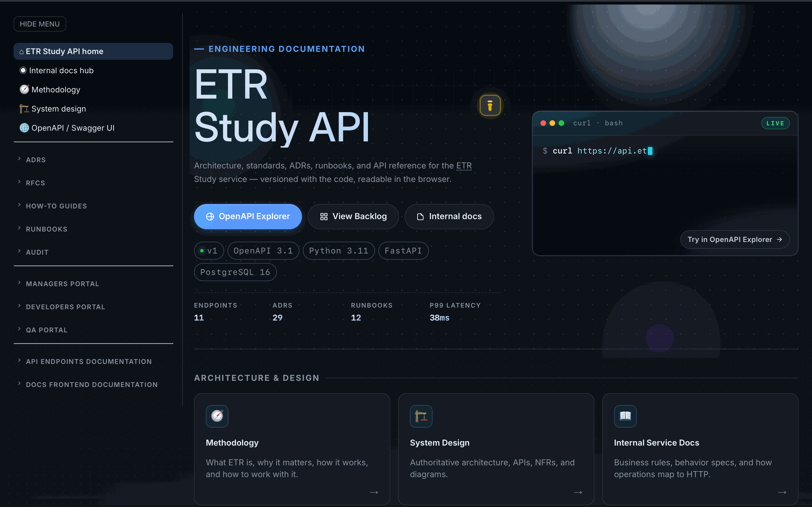
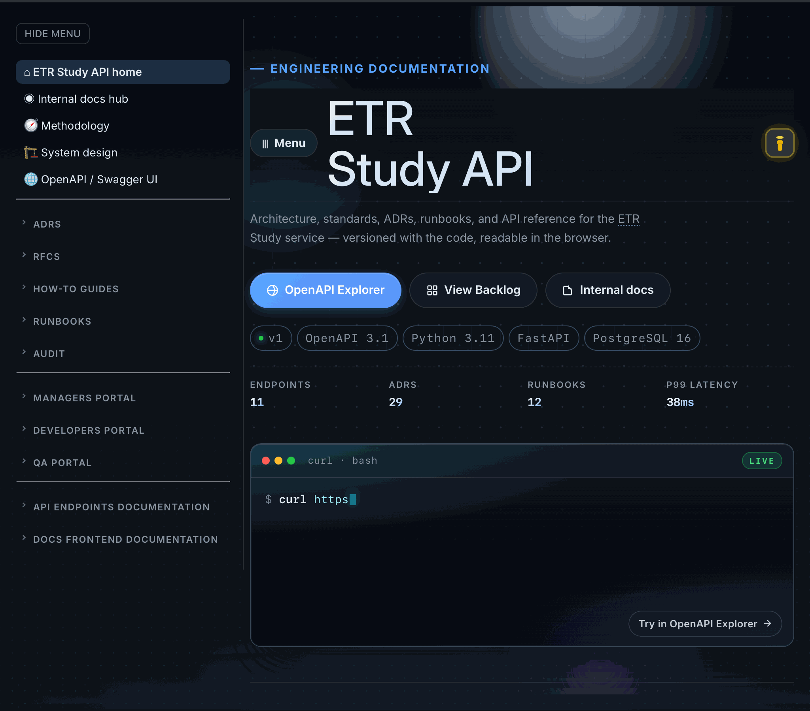
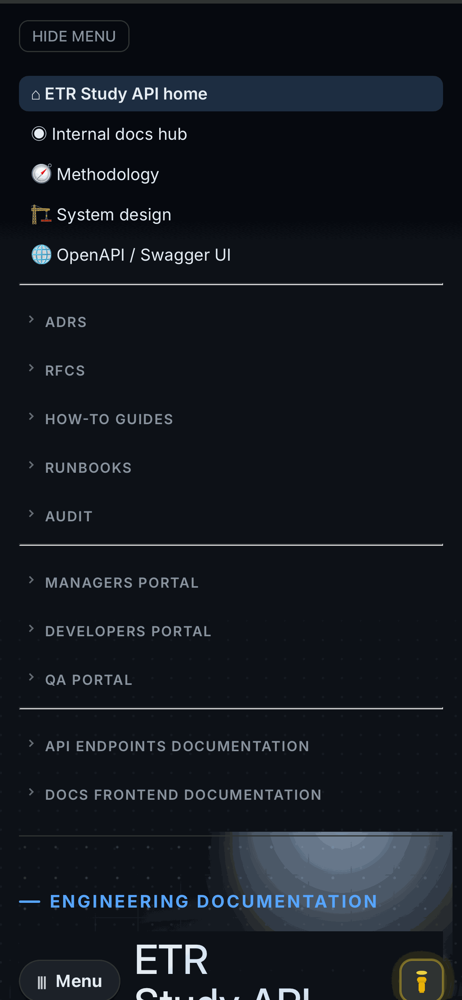
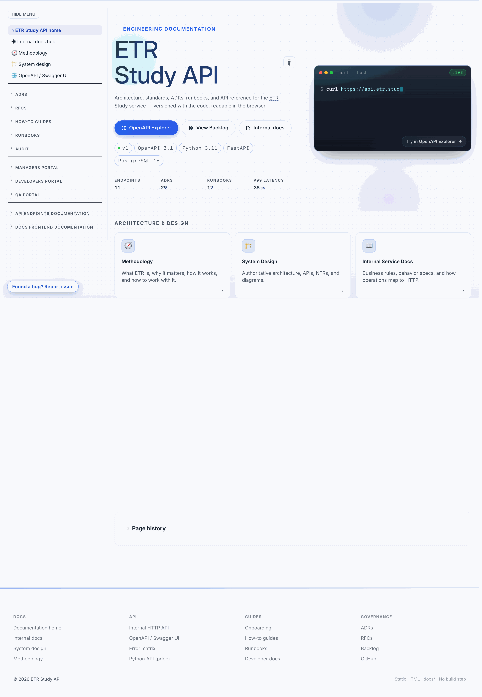

Screen spec: Engineering hub home (docs/index.html) Screen
At a glance
Glossary: every domain term in this spec (HUD bracket, radar ring, glyph rain, wordmark scramble, lock-flash, terminal panel, magnetic CTA, mono-chip, ticker, dot-grid, parallax orb, iris shutter, view transition, etc.) is defined in the home screen terms section of the docs frontend glossary. Look it up there before guessing.
Visual gallery
Screenshots captured from the live page using the project's screenshot capture script
(scripts/capture_screen_specs.py). Click any image to open it full-size. Update the gallery in
the same PR that changes the screen.







Anatomy
The home screen has two top-level phases: a transient boot intro overlay shown for ~3 seconds on every motion-allowed visit, and the persistent page surface underneath. Numbered callouts are referenced throughout this spec.
- 1Glyph rain canvas — full-viewport falling Katakana/ASCII matrix as ambient backdrop.
- 2Radar pulse rings — three concentric rings expanding from center, staggered.
- 3HUD brackets — four corner brackets framing the wordmark stage.
- 4Wordmark — center text
ETR // APIassembling via glyph scramble + lock-flash. - 5Progress bar — fills 0→100% as wordmark glyphs lock; numeric counter on the right.
- 6Status pill — pulsing cyan dot + status text (booting → decoding → locking → ready).
- 7Skip button — top-right; closes intro instantly via iris shutter.
- 8Scroll progress — top-of-viewport horizontal bar tracking page scroll.
- 9Hero copy column — eyebrow, H1 (with decrypt + variable-font weight), tagline, CTAs.
- 10Mono-chips strip — small monospace pills of stack/version metadata.
- 11Number tickers — count-up footprint metrics (endpoints, ADRs, runbooks, latency).
- 12Card sections — three labelled groups (Architecture / API Reference / Repository Root) with section tint shifts.
- 13Live terminal panel — self-typing curl example with live badge and "Try in OpenAPI" CTA.
- 14Page history — change log table at the bottom.
Hero background also includes a cursor-reactive dot-grid canvas, three parallax orbs, and a static square grid mask — depth layers, not interactive.
Layout map
- Intro overlay (
.home-intro, fixed, z-index 120): ephemeral, ~3.0s, removed after iris-shutter exit. Locks page scroll while active viabody.home-intro-lock. - Scroll progress bar (
.home-scroll-progress, fixed, z-index 130): persistent thin bar at top of viewport,scaleXdriven bywindow.scrollY / max. - Layout shell (
.internal-layout__shell): two-column shell shared with internal docs — left sidebar mount + right main column. - Hero region (
.home-hero): isolated stacking context. Background layer holds dot-grid canvas, three parallax orbs, and a static square grid (radial-masked). Foreground is a CSS grid with two children: copy column and terminal panel. - Three card sections: Architecture & Design, API Reference, Repository Root — each with
data-section-tint="cool|teal|mono"and anIntersectionObserverreveal with staggered card entry. - Page history card (
#page-history): chronological change log table. - Floating bug-report FAB (
.docs-report-bug-fab): bottom-right, opens feedback modal.
Boot intro overlay (Phase 1)
Inspired by HUD/instrument boot screens used in developer-tool landings (Linear, Cursor, Anthropic, Stripe
Sessions). Plays on every motion-allowed visit, gated only by prefers-reduced-motion.
Composition layers (z-order, bottom to top)
- Backdrop (
.home-intro__backdrop): radial-gradient + blur. - Glyph rain (
canvas[data-home-intro-rain]): full-viewport, opacity 0.5. - Scanlines (
.home-intro__scanlines): repeating 1px-on / 3px-off horizontal stripes, opacity 0.4. - Vignette (
.home-intro__vignette): radial darkening at edges. - Radar rings (
.home-intro__radars > .home-intro__radar × 3). - Stage (
.home-intro__stage): invisible centered box holding HUD brackets and crosshair ticks. - Wordmark (
.home-intro__wordmark): centeredETR // API. - Progress bar (
.home-intro__bar): 0→100% sync with glyph lock. - Status pill (
.home-intro__status): monospace text + pulsing dot. - Skip button (
.home-intro__skip): absolute top-right.
Glyph rain
- Implementation:
startGlyphRain(intro)indocs/assets/home-landing.js. - Glyph pool: Half-width Katakana (
ｱ-ﾝ) + ASCII alphanumerics + punctuation/box-drawing. - Columns:
ceil(viewport_width / 17.6px), each with random initialy, speed (1.5–4.5 px/frame), andactiveflag (~55% start active). - Burst pulses: on every wordmark glyph lock the rain receives
burst(0.55); on full lockburst(1). Burst decays exponentially (~250ms half-life). - DPR-aware: canvas backing store scales by
min(devicePixelRatio, 2).
Radar pulse rings
- Three rings (
.home-intro__radar--1/2/3) animate via@keyframes hud-radar-pulsefor 3.6s, infinite, with delays 0s / 1.2s / 2.4s. - Path:
scale(0.5) opacity 0 → opacity 0.85 → scale(7.2) opacity 0, border thickness eases from 2px to 0.5px. - On
.home-intro.is-lockedanimation duration drops to 1.6s, border switches to white.
HUD brackets and crosshair ticks
- Four 28×28 corner brackets (
.home-intro__bracket--tl/tr/bl/br), idle pulse 2.4s. - Two crosshair ticks above/below — thin 14px cyan lines.
- On full lock: brackets play
hud-bracket-snap(scale 1 → 1.22 → 0.96 → 1, 720ms) and switch to white.
Wordmark scramble
- Implementation:
startWordmarkScramble(intro, "ETR // API", onLocked, rain). - Per-character spans: each character is a separate
<span class="ig-char">; spaces become.ig-space, slashes.ig-slash. - Initial delay: 600ms before lock timing starts.
- Stagger: 90ms between consecutive lock-times, left-to-right.
- Scramble duration per char: 720ms — every ~50ms each unlocked char shows a fresh random glyph.
- Lock per char:
.ig-char--scramblingremoved;.ig-char--lockedadded (480msig-lockflash: scale 1.18 → 0.98 → 1). - On full lock:
.is-lockedon both.home-intro__wordmarkand.home-intro; bracket snap, radar speed-up, status "ready", scan beamig-beam,burst(1). - Progress bar sync: each lock increments
lockedCount,updateProgress()updates width and percentage label.
Status pill phrases
booting study runtime— initialdecoding wordmark— at +600mslocking glyphs— at +1100msready— on full lock
Iris shutter exit
runShutterExit(intro)animates aclip-path: circle(150% → 0%)over 720ms withcubic-bezier(0.87, 0, 0.13, 1).markIntroDone()fires at shutter start so dependent modules begin while the iris is still collapsing — no "settled but blank" state.- Body class
home-intro-lockis removed; page scroll restored.
Hero region (Phase 2)
The hero is a two-column CSS grid (1.15fr 1fr) on desktop, collapsing to single-column at
≤1024px. Left column carries copy + interactive secondary content; right column is the live terminal panel.
Background layers (.home-hero__bg, z-index −1)
- Cursor-reactive dot-grid (
canvas[data-home-dotgrid]): grid spacing 26px; within 140px of pointer dots scale to 3.7px and brighten.bindDotGrid(); rAF-throttled, DPR-aware, theme-aware. - Parallax orbs (
.home-hero__orb--one/two/three): three blurred radial-gradient discs. Depth multipliers0.28 / 0.18 / 0.12.bindHeroParallax(), damping 0.12. - Static grid (
.home-hero__grid): 36px squares masked by radial gradient.
H1 title
- Two flex-column children:
.home-hero__title-line--one(ETR) and--two(Study API). - Gradient applied per line (not on the H1) — gradient-text works correctly with child decrypt-spans only when gradient is on the immediate inline-text container.
- First-visit kinetic entry:
home-title-kineticat delays 270ms / 370ms. - Animated gradient sweep: background-position oscillates 0% → 100% over 8s alternate.
- Decrypt (
bindHeroDecrypt): triggered byhome:intro-done; per-character spans cycle random glyphs and lock left-to-right (580ms each, 32ms stagger). - Variable-font weight on scroll (
bindVariableWeight):--home-h1-wghtupdated on scroll; range 500 → 760.
CTAs
- Primary: OpenAPI Explorer (gradient fill, accent border, magnetic).
- Secondary 1: View Backlog.
- Secondary 2: Internal docs.
- Magnetic effect (
bindMagneticCta, opt-in viadata-home-magnetic): pointer offset → damped translate (0.16 ratio, clamped ±9 / ±7). Applied to primary only. - View Transitions API (
bindViewTransitions,data-home-vt): on Chromium 127+ click is intercepted and navigation runs insidedocument.startViewTransition. Per-CTAview-transition-namefor shared-element morphs.
Mono-chips
- Five small monospace pills:
v1,OpenAPI 3.1,Python 3.11,FastAPI,PostgreSQL 16. - First chip has a pulsing green status dot (live API version indicator).
- Backdrop-filter blur 6px.
Number tickers
- Four tickers:
Endpoints (11),ADRs (29),Runbooks (12),p99 latency (38ms). - Count-up (
bindTickers): on first intersection (≥50%), animates 0 → target, cubic-out 900ms; 80ms stagger between tickers.
Live terminal panel
- Chrome: three macOS traffic-light dots, label
curl · bash, greenLIVEbadge. - Body:
<pre><code data-home-terminal-target></code></pre>. - Script:
TERMINAL_SCRIPTarray of{ cls, text }segments. Each char appended via setTimeout: base 18–24ms + jitter 0–28ms; newlines pause 90ms. - Caret:
.home-terminal__caret8×1em, blinks every 720mssteps(2, end). - Gating: typing starts only when both intro-done event has fired AND panel is in viewport (threshold 0.35), then a 420ms grace pause. Guarantees no pre-emption of intro.
- Reduced motion:
renderTerminalStatic()writes the full content immediately.
Card sections
- Architecture & Design (
data-section-tint="cool") — 3 cards: Methodology, System Design, Internal Service Docs. - API Reference (
data-section-tint="teal") — 2 cards: OpenAPI / Swagger UI, Python API Reference. - Repository Root (
data-section-tint="mono") — 2 cards: README.md, CONTRIBUTING.md.
Section tint shift
- Implementation:
bindSectionTints()usesIntersectionObserverwithrootMargin: "0px 0px -25% 0px"andthreshold: 0.1. On intersect adds.is-tinted. ::beforepseudo expands the section bounds and fades to opacity 1 over 700ms with a tint-specific radial gradient.
Card hover
- Lift
translateY(-3px)+ 3D tiltrotateX(1.2deg) rotateY(-1.4deg)(motion-allowed only). - Border ramps to accent-mixed color; dual-layer shadow.
- Left accent stripe (
::before) slides in vertically. - Shimmer sweep (
::after): translucent diagonal band translates left → right over 620ms. - Icon scales 1.08×; arrow shifts +4px and brightens to accent.
Card stagger reveal
bindRevealOnScroll()setstransition-delay: i * 65ms; double-rAF before adding.is-visible.
Behavior matrix
| Element | State | Trigger | Outcome | Notes |
|---|---|---|---|---|
| .home-intro | active | Page load (motion-allowed) | Overlay fades in; body.home-intro-lock locks scroll |
Skipped under prefers-reduced-motion: reduce |
| .home-intro__skip | click / Esc | User input | closeIntro() → iris shutter |
Both Esc and click bound |
| .home-intro__wordmark | scrambling | +600ms after intro start | Per-char glyph cycling | Glyph pool: Katakana + ASCII |
| .home-intro__wordmark | per-char lock | Time reaches char's localEnd | .ig-char--locked; burst(0.55) on rain; progress bar +n% |
Auto-clears --locked after 420ms |
| .home-intro | is-locked | All chars locked | Bracket snap, radar speed-up, status "ready", scan beam, burst(1) |
One-shot |
| .home-intro | exit | ~+2400ms after start (or skip) | Iris shutter 720ms; markIntroDone() fires at start |
Hard cap at 3000ms; failsafe at 3600ms |
| .home-hero__title | decrypt | home:intro-done event |
Per-line per-char scramble-resolve | Begins mid-shutter |
| .home-hero__title | variable-weight | Page scroll | --home-h1-wght updated 500→760 |
rAF-throttled |
| .home-hero__terminal | typing | intro-done AND visible (≥35%) | Char-by-char render of TERMINAL_SCRIPT |
420ms grace pause; static fallback under reduced-motion |
| .home-hero__cta--primary | magnetic | pointermove within element | Damped translate (±9/±7 clamp) | Primary only; secondaries don't move |
| a[data-home-vt] | navigate | Click (no modifier keys) | document.startViewTransition wraps navigation |
Chromium 127+ only; native nav fallback |
| .home-ticker__num | count-up | First intersection (≥50%) | Animate 0 → target over 900ms cubic-out | One-shot per ticker; 80ms stagger |
| canvas[data-home-dotgrid] | cursor-react | pointermove in hero bounds | Dots within 140px scale and brighten | Disabled under reduced-motion |
| [data-section-tint] | tinted | First intersection (10%) | .is-tinted → backdrop fades in 700ms |
Cool / teal / mono variants |
| .home-card | hover | pointerenter | Lift, tilt, shimmer, accent stripe | Tilt suppressed under reduced-motion |
| .home-card | reveal | Section intersection | Stagger fade-up (65ms × index) | Per data-home-reveal |
Timing budget
- 0 ms
- Overlay fades in (
opacity 0 → 1over 420ms via.home-intro.is-active). - 0 ms
- Glyph rain canvas starts; opacity transitions to 0.5 over 600ms.
- 0 ms
- Radar ring 1 begins its 3.6s pulse loop.
- +80 ms
- Stage (brackets + crosshairs) fades in over 420ms.
- +600 ms
- Status →
decoding wordmark. Wordmark per-char lock timing starts. - +1100 ms
- Status →
locking glyphs. - +1200 ms
- Radar ring 2 begins (delay 1.2s).
- +1320 ms
- First wordmark glyph locks; rain receives
burst(0.55). - +1320…+1980 ms
- Remaining glyphs lock ~90ms apart; progress bar 14% → 100%.
- +2400 ms
- Radar ring 3 begins.
- ~+2000 ms
- All glyphs locked.
.is-lockedadded; bracket snap (720ms), radar speed-up (1.6s loop), status →ready, scan beam, rainburst(1). - ~+2400 ms
closeIntro()scheduled.- ~+2720 ms
- Iris shutter starts collapsing (720ms).
markIntroDone()fires at start. - ~+3440 ms
- Iris fully closed; overlay removed. Page surface fully visible.
- +3000 ms (cap)
setTimeout(closeIntro, INTRO_DURATION_MS)hard cap.- +3600 ms (failsafe)
- Outer
setTimeout(closeIntro, INTRO_DURATION_MS + 600).
Data contract
Body-level
body.internal-layout— internal-layout shell.body[data-maintainer-ids]— comma-separated maintainer ids.body.home-intro-lock— added while intro is active to disable scroll.body.home-first-visit— added on motion-allowed loads; gates kinetic + decrypt.
Intro overlay
[data-home-intro],[data-home-intro-rain],[data-home-intro-glyphs],[data-home-intro-progress],[data-home-intro-progress-pct],[data-home-intro-status],[data-home-intro-skip]..home-intro.is-active,.home-intro.is-locked,.home-intro__wordmark.is-locked.
Hero
[data-home-parallax-host],[data-home-parallax-layer],[data-home-dotgrid],[data-home-variable-weight].[data-home-decrypt="..."],[data-home-magnetic],[data-home-vt="..."],[data-home-terminal-target].[data-home-tickers],[data-home-ticker-target],[data-home-ticker-suffix].
Sections
[data-home-reveal],[data-section-tint="cool|teal|mono"],[data-home-scroll-progress].
Cross-module events
- Event:
home:intro-doneonwindow, dispatched bymarkIntroDone()at most once. - Helper:
whenIntroDone(fn)callsfnsynchronously if already done; otherwise registers a once-listener.
Responsive behavior
Tier names follow the canonical viewport breakpoints. The 640 px and 720 px cut-offs below are component-level reflow thresholds inside the mobile tier and the bottom of tablet; they are not separate device tiers.
- Desktop (≥1025 px): hero two-column (
1.15fr 1fr); card grid up to 3 columns. - Tablet (761–1024 px): hero collapses to single column (terminal stacks under copy); card grid limited to 2 columns.
- Mobile (≤760 px): mobile-tier rules apply. Below 640 px (component cut-off): hero padding shrinks; H1 capped at
clamp(2rem, 8vw, 2.8rem); orbs 2 and 3 hidden; tickers go to 2 columns; card grid is 1 column. - Wordmark intro: font-size
clamp(2.4rem, 9vw, 6rem). - HUD stage: width
min(720px, 78vw), heightclamp(220px, 28vh, 320px).
Accessibility and motion
prefers-reduced-motion: reduceis the master gate. When reduced:- Intro overlay is removed;
home:intro-donedispatches synchronously. - Dot-grid canvas hidden; orbs and parallax disabled.
- Title-line kinetic + gradient sweep stopped.
- H1 decrypt does not run.
- Terminal renders the full script statically.
- Scroll progress bar and section tints not painted.
- Card stagger and shimmer hover effects disabled.
- Intro overlay is removed;
- Skip control: keyboard-focusable; Esc bound.
- ARIA:
aria-label="ETR // API"on wordmark,aria-label="API example"on terminal panel,aria-hidden="true"on decorative canvases / SVG sub-trees. - Focus rings:
:focus-visibleoutline 2px--accentwith offset on cards, CTAs, and skip. - Color contrast: text in the intro overlay clears WCAG AA against the darkened backdrop (vignette + alpha layers).
- Theme: pre-paint inline script in
<head>readslocalStorage["docs-theme-preference"]and setsdata-themebefore first paint.
Where to change what
docs/index.html— markup, anchors, mount placeholders, copy text, mono-chip values, ticker targets, CTA hrefs.docs/assets/home.css— all home-screen styles.docs/assets/home-landing.js— runtime logic.docs/assets/docs.css+docs-theme.css— global tokens consumed byhome.css.docs/assets/internal-sidebar.js— left sidebar nav (must include this spec under Screens).docs/assets/docs-portal-data.js— generated data feeding maintainer/avatar widgets.
Tuning knobs
INTRO_DURATION_MS(default 3000) — total intro budget.WORDMARK_TEXT(defaultETR // API).SCRAMBLE_DURATION/STAGGER/INITIAL_DELAYinstartWordmarkScramble.TERMINAL_SCRIPTarray — the curl example content.data-home-ticker-targetattributes inindex.html.SPACING/REACT_RADIUSinbindDotGrid.
Acceptance checklist
- Intro overlay plays on motion-allowed visits and finishes within 3.6s; pressing Esc or skip closes it instantly.
- With
prefers-reduced-motion: reduce, the overlay is removed and the page renders statically; H1 not scrambled, terminal renders complete script. - H1 visible and gradient-rendered on every reload (no flicker, no blank state).
- Live terminal does not start typing before the intro completes — first char lands ≥420ms after iris starts collapsing.
- Progress bar reaches 100% as wordmark fully locks; status reads "ready".
- Card sections reveal with stagger; section tints fade in on first intersection.
- Hover on a card produces lift + shimmer + arrow shift; no jank.
- Magnetic primary CTA tracks pointer with damping; secondaries don't move.
- Number tickers count up exactly once when scrolled into view.
- On Chromium 127+: clicking OpenAPI Explorer triggers a view transition. Fallback works on Firefox/Safari.
- Responsive: hero collapses correctly in the tablet tier (≤1024 px); mobile (≤760 px) hides orbs 2/3 below the 640 px component cut-off and reflows tickers.
- No console errors; no orphaned setTimeouts after intro close.
- Screenshots in the gallery match current visual state.
- Glossary, architecture map, and other affected docs updated in the same PR.
Known edges and design decisions
- Gradient on title-line, not on H1. Earlier the gradient sat on
.home-hero__title; withdisplay: inline-flex+ flex-item children + per-char decrypt spans the gradient stopped clipping correctly across browsers. Moving it to each.home-hero__title-line(single-block container) fixed the issue. - Decrypt children are
display: inline.inline-blockorwill-changeon per-character spans creates independent painting contexts that break the line'sbackground-clip: text. Keep them inline. markIntroDone()fires at shutter start, not end. Intentional: H1 decrypt and follow-on animations begin while iris is still collapsing.- No first-visit-only gate. Intro plays on every motion-allowed visit. If a localStorage gate is added, document it here.
- Static ticker values.
11/29/12/38are hard-coded inindex.html. Wiring todocs-portal-data.jsis possible — do it in one PR with the corresponding data-collection script update. - Mix-blend-mode removed from dot-grid canvas. An earlier version used
mix-blend-mode: screenwithz-index: -1; some browsers pushed the canvas above hero content. Reverted to plainopacity. - Intro is not first-visit-only. It plays each load. A localStorage flag would be simple to add; if added, also gate the rain canvas init so no GPU work runs on returning visitors.
Page history
| Date | Change | Author |
|---|---|---|
| Added Screen page-type badge to H1. | Ivan Boyarkin | |
Restructured to the new screen-spec template (at-a-glance + status badge, visual gallery, anatomy, layout map, behavior matrix, timing, data contract, responsive, accessibility, change map, acceptance, known edges); added screenshots in ./assets/. |
Ivan Boyarkin | |
| Created home-screen specification with anatomy diagram and full coverage of boot intro and hero region. | Ivan Boyarkin |